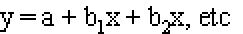

Logistic Regression
Lead Author(s): Jeff Martin, MD
Definition of Logistic Regression
Logistic regression is the method of multivariable analysis used most often in cross-sectional and case-control studies.
In logistic regression the log odds of the outcome is modeled with the linear equation:

Log odds (called the logit, hence logistic regression) are used because
- They extend from minus to plus infinity and therefore do not constrain the prediction of the linear model
- Unlike directly modeling the probability, which has a minimum of 0 and a maximum of 1,
- Unlike the odds, which has a minimum of 0.
Prediction in a linear model isn’t constrained to a 0 minimum or a 1 maximum,
- So using log odds of the outcome (y) solves this problem.
So exponentiating the b from a logistic equation returns an odds for one unit of change in the variable x.
- In the case of a dichotomous variable x, the b is comparing the odds for the variable = 1 versus the variable = 0.
- In other words, exponentiating b gives the odds ratio for the two values of x.
- In the case of a continuous variable x, exponentiating b gives the odds ratio for a one unit difference in the value of x